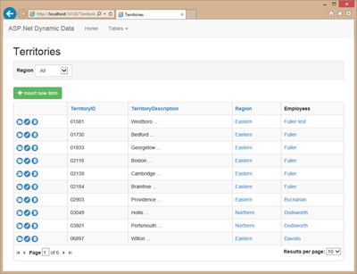
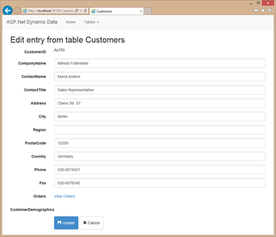

<h1>Bootstrap Freindly Dynamic Data</h1>

<h2>Project Update</h2>

<p>Just a note I will be breaking this into two projects this "Bootstrap Freindly Dynamic Data" and the Bootstrap Web Controls soon</p>

<p><a href="http://csharpbits.notaclue.net/2013/07/bootstrap-friendly-dynamic-data.html">Bootstrap Friendly Dynamic Data</a></p>

<p></p>

<p>The Default page when using this Project Template</p>

<p></p>

<p>The List Page</p>

<p></p>

<p>The Edit Page</p>

<h3>Releasing updates</h3>

<p>I'll be doign the best I can to add ALL my Dynamic Data addons to this project over time</p>

<ol>
<li><strong>Bootstrap Server Controls</strong><br/>
<ol><br/>
<li><strong>Menu</strong> - A Control based on the ASP.Net Menu control that render in Bootstrap format.</li><br/>
<li><strong>BreadCrumb</strong> - A Control based on the ASP.Net BreadCrumb control that renders in Bootstrap format.</li><br/>
<li><strong>Tab Control</strong> - A NEW Web Control that Renders out a Bootstrap Tab Container.</li><br/>
</ol></li>
<li><strong>Field templates</strong><br/>
<ol><br/>
<li><strong>UploadFile</strong> - upload images to folder on web server.</li><br/>
<li><strong>UploadImage</strong> - upload and display images (stored in folder on webserver).</li><br/>
<li><strong>SelectImage</strong> - select from a list of images stored the image name in the field.</li><br/>
<li><strong>Date</strong> - uses the AJAX Control Toolkit Date Picker for choosing dates for date fields.</li><br/>
<li><strong>ValueList</strong> - Select predefined values from dropdown list similar to Foreign Key field template but work on none FK Columns.</li><br/>
<li><strong>HTMLEditor</strong> - Uses the AJAX Control Toolkit HTML Editor</li><br/>
<li><strong>Autocomplete</strong> - Uses the AJAX Control Toolkit AutoComplete to filter the Foreign Key list, there will also be an autocomplete list for any column as well as the Foreign Key column version.</li><br/>
<li><strong>ChoiceList</strong> - Dropdown List for any Column.</li><br/>
<li><strong>ChildrenList</strong> - Provides a way to show child tables, works in conjunction with the new Edit and Details page templates.</li><br/>
</ol></li>
<li><strong>Filters</strong> - some of the filters are direct ports from the old <strong>ASP.Net Dynamic Data Futures VS2008 SP1 RTM project</strong>, they do what they say on the tin.<br/>
<ol><br/>
<li><strong>GreaterThan &amp; GreaterThanOrEqual</strong> - numeric values.</li><br/>
<li><strong>LessThan &amp; LessThanOrEqual</strong> - numeric values.</li><br/>
<li><strong>DateRange</strong> - filter values between two dates.</li><br/>
<li><strong>Range</strong> - filter between two values.</li><br/>
<li><strong>Autocomplete</strong> - Provides a method of pre-filtering huge Foreign Key list.</li><br/>
<li><strong>Contains</strong> - equivalent to T-SQL LIKE �%search term%�</li><br/>
<li><strong>MultiForeignKey</strong> - allows selecting several Foreign Key values at once.</li><br/>
<li><strong>StartsWith</strong> - equivalent to T-SQL LIKE �search term%�</li><br/>
<li><strong>EndsWith</strong> - equivalent to T-SQL LIKE �%search term�</li><br/>
<li><strong>DateFrom</strong> - greater than a particular date.</li><br/>
<li><strong>DataTo</strong> - less than a particular date.</li><br/>
<li><strong>Cascading</strong> - Allows related Foreign Key column s to filter each other.</li><br/>
<li><strong>CascadingHierarchical</strong> - provides a cascading filter for single foreign key columns that have parent tables the they can be filtered by. </li><br/>
</ol></li>
<li><strong>Page Templates</strong><br/>
<ol><br/>
<li><strong>New Details and Edit page templates</strong> that use the ChildrenList field template and a tab control to display selected child tables beneath the main FormView.</li><br/>
<li><strong>Wizard</strong> - This is just like the Insert or Edit page templates but uses the standard ASP.Net a wizard control and allows specifying which page each field should appear on.</li><br/>
<li><strong>New List</strong> page with inline Edit and Insert plus Refresh button.</li><br/>
<li><strong>Popup</strong> Insert page templates. </li><br/>
</ol></li>
<li><strong>Entity Templates</strong><br/>
<ol><br/>
<li><strong>Group</strong> - This allows grouping fields into section with each section having a title.</li><br/>
<li><strong>Tabs</strong> - Using Bootstrap Tabs</li><br/>
<li><strong>MultiColumn</strong> - Allows the creation of form with a grid like structure. </li><br/>
</ol></li>
<li><strong>Secured Dynamic Data</strong> site with table and column security.</li>
<li><strong>New Project Template</strong> - Menus and all the above features installed out of the box. </li>
</ol>

<p>Many of the templates are already available via NuGet from <a href="https://www.nuget.org/packages?q=DynamicData">here</a> and as I get the project setup here the rest will become available from NuGet also. </p>